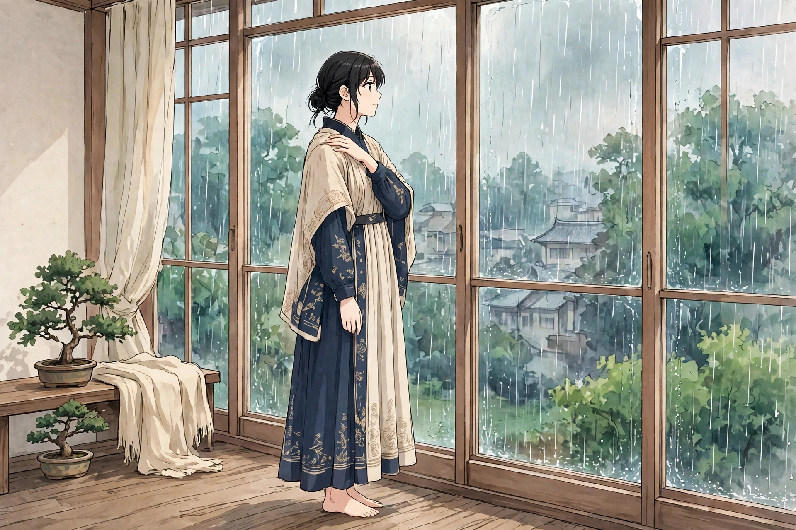

難波で雨の日に気になる肩こり｜低気圧の日の過ごし方とセルフケア、受診の目安

１．雨の日の肩こりとは ― 低気圧の日に意識しやすい場面
「晴れの日は気にならないのに、雨が降る日になると肩が重く感じる」「天気が崩れる前から、首や背中まで張る感じがする」「雨の日は体全体がだるくて、肩まわりも重い」——雨の日や低気圧の日に意識されやすい肩こりは、天気の変化と重なって語られることが多いお悩みの一つです。ここでいう肩こりは、首から肩、肩甲骨まわりにかけての重さや張り、だるさなどをまとめて表す日常的な言い方で、医学的な診断名ではありません。雨の日に感じる頭の重さや体のだるさについては関連コラムでも紹介していますが、この記事では「雨の日・低気圧の日と肩まわりの重さとの関わり」に焦点を当てて整理します。難波周辺でも、通勤の電車移動や駅の乗り換え、傘をさして荷物を持つ場面など、雨の日ならではの肩まわりへの負担がかかる場面は日常の中にあります。感じ方や続く期間は人によってさまざまで、感じ方だけで、その背景を特定することはできません。この記事では、雨の日の肩こりの一般的な解説、考えられる要因の例、低気圧の日に取り入れやすい過ごし方とセルフケア、そして先に医療機関へ相談したい目安を整理します。あくまで一般的な情報としてお読みください。
２．考えられる要因の整理
雨の日や低気圧の日に肩こりを感じやすくなる背景には、次のような天気の変化や、その日の過ごし方が関係している場合があります。
- 気圧の変化と自律神経のゆらぎ：天気が崩れる前後は気圧が下がりやすく、体の調子を整える自律神経のバランスがゆらぎやすいと言われます。肩の重さも、そのような日の感じ方と一緒に語られることがあります。
- 冷えと湿度：雨の日は気温が下がったり、湿気で体が冷えやすく感じたりすることがあります。首・肩まわりが冷えると、重さを感じやすい方もいます。
- 室内で過ごす時間の長さと姿勢のくせ：雨の日は室内で座って過ごす時間が長くなりやすく、同じ姿勢が続くと首・肩まわりの負担が重なることがあります。
- 運動量の減少：外出や歩く機会が減る日は、体を動かす場面そのものが少なくなり、肩まわりを動かす機会も減りやすくなります。
- 眠りの質の変化：天気が悪い日は眠りが浅いと感じたり、朝の目覚めがすっきりしないと感じたりする方もいて、その感じ方が肩の重さと一緒に語られることがあります。
- ストレスや気分のゆらぎ：雨が続く日は気分が沈みがちになったり、予定の変更でばたついたりすることもあり、気持ちの緊張とともに無意識に肩に力が入っていることもあります。
- スマートフォンを見る姿勢：室内で過ごす時間が長い日は画面を見る時間も増えやすく、うつむき気味の姿勢が続くと、頭の重さを首・肩まわりで支える時間が長くなり、張りと一緒に語られることがあります。
- 姿勢のくせの積み重ね：背中が丸まった姿勢や、肩が前に出た姿勢、片側の肩にだけバッグをかけるといったくせが、肩まわりの負担の偏りと一緒に語られることがあります。雨の日は、傘をさす側の肩に負担が偏る場面もあります。
- 疲れの蓄積：平日の疲れが抜けにくいと感じる日が重なったり、天気が崩れる日と重なったりすると、普段より肩の重さを感じやすいこともあります。
これらは一例であり、当てはまる要因があっても、それがご自身の肩こりの背景であると決めつけることはできません。
３．日常で取り入れられるセルフケア
どれも特別な道具はいりません。雨の日や低気圧の日でも取り入れやすいものから、無理のない範囲で続けやすいものを取り入れてみてください。背面の指標（図1）と、前面の経絡の流れ（図2）も参考にしてください。
- 温める：帰宅後の入浴で体全体を温めるほか、雨で冷えたと感じる日は、上着やストールなどで首・肩まわりを冷やさない工夫をする方もいます。
- 肩をゆっくり動かす：肩をすくめてストンと下ろす、肩甲骨を背中側で寄せるように小さく動かすなど、呼吸をしながら気持ちのよい範囲で動かします。首を強く回したり反らしたりは避け、痛みが強まる場合は中止してください。
- 首・肩まわりのストレッチ：耳を肩に近づけるように頭をゆっくり傾けて首の側面を伸ばす、両手を組んで前に伸ばして背中側を広げるなど、反動をつけず、気持ちのよい範囲で短い時間から取り入れる方もいます。
- こまめに姿勢を変える：室内で座って過ごす時間が長い日こそ、1時間に一度は立ち上がって歩く、軽く伸びをするなど、同じ姿勢を続けない工夫を心がけます。
- 深呼吸で肩の力を抜く：気づいたときに、ゆっくり息を吐きながら肩を下ろす時間を合間につくる方もいます。
- 室内の環境を整える：雨の日の室内は湿気や冷えを感じやすいため、除湿や室温の調整、足元を冷やさない工夫などで、過ごしやすい環境を整える方もいます。
- 感じ方をメモする：肩の重さを感じた日の天気や気圧の変化、過ごし方や眠りの様子を簡単に記録しておくと、ご自身のパターンに気づきやすくなり、医療機関へ相談する際の材料にもなります。


４．受診の目安
次のような場合は、セルフケアやサロンでのケアより先に、医療機関への相談をご検討ください。
- 腕や手にしびれがある、または手に力が入りにくい感じがある
- 肩や腕に強い痛みがあり、動かしにくい、または夜、痛みで目が覚める
- 発熱を伴う、または転倒・打撲などのケガのあとに痛みが出た
- 胸の違和感や息苦しさ、冷や汗を伴う
- 数週間たっても肩の重さや張りが続いている
これらは一例です。肩の重さや張りの背景には、首や肩まわりの骨や神経の不調など、早めの対応が必要な体の不調が関係する場合もあります。当てはまる場合や、少しでも気になる症状がある場合は、自己判断せず医療機関にご相談ください。
５．当店でのケアとサロンのご案内
ステラシリウス（難波）は、月〜土 17:00〜22:00（日曜休み）に営業する女性専用サロンです。カウンセリングで当日のお悩みをうかがい、首・肩・肩甲骨まわりを含めた体の状態を見ながら、オイルマッサージと美容整体を組み合わせた90分 10,000円（税込）のコースをご用意しています。完全個室で、シャワー完備のため、施術の前後に汗やオイルを流してからお帰りいただけます。お仕事帰りや、難波でのお買い物のあとの夜の休息の時間としてご利用ください。なお、ステラシリウスは近日開院予定のため、ご予約の受付はまだ開始していません。また、当サロンはリラクゼーションを目的としたサロンで、医療行為は行いません。肩こりへの治療を行うものではありませんので、「受診の目安」に当てはまる場合は、まず医療機関へご相談ください。
関連コラム：難波で雨の日に気になる頭の重さ｜低気圧の日の過ごし方とセルフケア、受診の目安 ／ 難波で雨の日に気になる体のだるさ｜低気圧の日の過ごし方とセルフケア、受診の目安 ／ 難波で40代に気になる肩こり｜年代と日常の見直しとセルフケア、受診の目安 ／ 難波で週末に気になる肩こり｜休みの日の過ごし方とセルフケア、受診の目安 ／ 難波で朝に気になる首こり｜起き抜けの首の重さとセルフケア、受診の目安
さらに学びたい方へ：現場で使われる専門書（PR）
当店の施術でも参考にしている専門書です。体の仕組みをもう少し知りたい方へ。


※本ブロックのリンクはAmazonアソシエイト・プログラムおよび楽天アフィリエイトによる広告リンクです。使用感の保証をするものではありません。